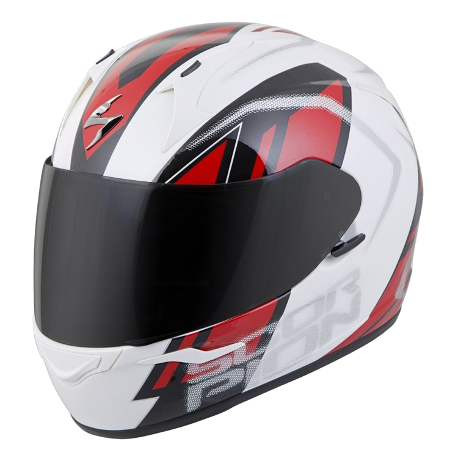

Scorpion EXO-R320 Endeavor Helmet
Lépjen be a teljes arcot fedő sisakok világába a Scorpion EXO-R320 segítségével. A funkciókkal és védelemmel teli EXO-R320 LG polikarbát héjjal, kettős sűrűségű EPS-sel és arcvédővel rendelkezik, amely záródik, amikor készen áll a kanyarulatok faragására. Lovagolni a haverokkal? Szemüvegbarát belső, hangszórózsebekkel. Az arcvédő Pinlock-felkészített, ezért helyezzen be egy betétes lencsét (külön megvásárolható), hogy tisztán tartsa az Ön előtt álló utakat.